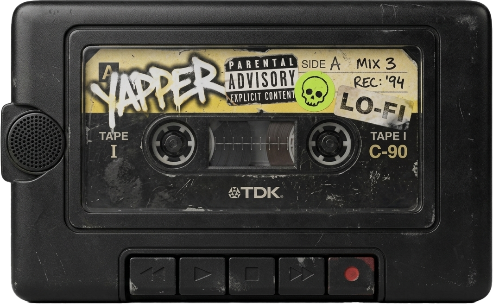
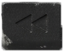

00:00 / 00:00
IDLE
1×
QUEUE 0
- —


Saving an empty box removes the stored key.
The Mac app reads on a right-Command tap. Windows needs a low-level keyboard hook for that, which lands with the reader work — these chords do the same jobs in the meantime.
—